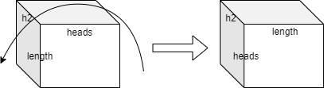

简介篇地址
接下来是训练阶段的模型和数据流。入口在trainer.py ：
1 2 3 4 5 6 7 8 9 10 11 12 def main (args) : model_cls = models.get_model(args.model) ...... model = model_cls(params).cuda() ...... def train_fn (inputs) : features, labels = inputs loss = model(features, labels) return loss ...... loss = train_fn(features) ......
THUMT-PyTorch版本中只实现了Transformer这个模型，因此models.get_model必然会返回它。
之后就是具体的模型和数据流了，分成模型入口、encoder和decoder来讲。
下文中会用以下符号标出变量的维度：
batch：batch sizelength_s：batch中源端句子的长度length_t：batch中目标端句子的长度hidden：表示的长度，默认为512h2: = hidden // heads
模型入口
模型初始化时首先执行Transformer.__init__函数：
1 2 3 4 5 6 7 8 9 10 11 12 13 14 15 16 17 18 19 20 21 22 23 24 25 26 27 def __init__ (self, params, name="transformer" ) : super(Transformer, self).__init__(name=name) self.params = params with utils.scope(name): self.build_embedding(params) self.encoding = modules.PositionalEmbedding() self.encoder = TransformerEncoder(params) self.decoder = TransformerDecoder(params) self.criterion = modules.SmoothedCrossEntropyLoss( params.label_smoothing) self.dropout = params.residual_dropout self.hidden_size = params.hidden_size self.num_encoder_layers = params.num_encoder_layers self.num_decoder_layers = params.num_decoder_layers self.reset_parameters()
其中调用的Transformer.build_embedding函数是这样的：
1 2 3 4 5 6 7 8 9 10 11 12 13 14 15 16 17 18 19 20 21 22 23 24 25 26 def build_embedding (self, params) : svoc_size = len(params.vocabulary["source" ]) tvoc_size = len(params.vocabulary["target" ]) if params.shared_source_target_embedding and svoc_size != tvoc_size: raise ValueError("Cannot share source and target embedding." ) if not params.shared_embedding_and_softmax_weights: self.softmax_weights = torch.nn.Parameter( torch.empty([tvoc_size, params.hidden_size])) self.add_name(self.softmax_weights, "softmax_weights" ) if not params.shared_source_target_embedding: self.source_embedding = torch.nn.Parameter( torch.empty([svoc_size, params.hidden_size])) self.target_embedding = torch.nn.Parameter( torch.empty([tvoc_size, params.hidden_size])) self.add_name(self.source_embedding, "source_embedding" ) self.add_name(self.target_embedding, "target_embedding" ) else : self.weights = torch.nn.Parameter( torch.empty([svoc_size, params.hidden_size])) self.add_name(self.weights, "weights" ) self.bias = torch.nn.Parameter(torch.zeros([params.hidden_size])) self.add_name(self.bias, "bias" )
还是很简单易懂的。
Transformer.__init__函数中分别创建了一个TransformerEncoder和一个TransformerDecoder：
1 2 3 4 5 6 7 8 9 10 11 12 13 def __init__ (self, params, name="encoder" ) : super(TransformerEncoder, self).__init__(name=name) self.normalization = params.normalization with utils.scope(name): self.layers = nn.ModuleList([ TransformerEncoderLayer(params, name="layer_%d" % i) for i in range(params.num_encoder_layers)]) if self.normalization == "before" : self.layer_norm = modules.LayerNorm(params.hidden_size) else : self.layer_norm = None
1 2 3 4 5 6 7 8 9 10 11 12 13 14 def __init__ (self, params, name="decoder" ) : super(TransformerDecoder, self).__init__(name=name) self.normalization = params.normalization with utils.scope(name): self.layers = nn.ModuleList([ TransformerDecoderLayer(params, name="layer_%d" % i) for i in range(params.num_decoder_layers)]) if self.normalization == "before" : self.layer_norm = modules.LayerNorm(params.hidden_size) else : self.layer_norm = None
具体内容放到encoder和decoder部分再去说。
Transformer.__init__函数最后调用的Transformer.reset_parameters函数也很简单：
1 2 3 4 5 6 7 8 9 def reset_parameters (self) : nn.init.normal_(self.src_embedding, mean=0.0 , std=self.params.hidden_size ** -0.5 ) nn.init.normal_(self.tgt_embedding, mean=0.0 , std=self.params.hidden_size ** -0.5 ) if not self.params.shared_embedding_and_softmax_weights: nn.init.normal_(self.softmax_weights, mean=0.0 , std=self.params.hidden_size ** -0.5 )
值得注意的是这里的src_embedding、tgt_embedding和softmax_weights都是使用@property装饰器的属性，因为它们是可以共享权重的。
然后把features和labels输入到模型中，调用的是Transformer.forward函数：
1 2 3 4 5 6 7 8 def forward (self, features, labels, mode="train" , level="sentence" ) : mask = features["target_mask" ] state = self.empty_state(features["target" ].shape[0 ], labels.device) state = self.encode(features, state) ......
其中调用的Transformer.empty_state函数是这样的：
1 2 3 4 5 6 7 8 9 10 11 12 13 def empty_state (self, batch_size, device) : state = { "decoder" : { "layer_%d" % i: { "k" : torch.zeros([batch_size, 0 , self.hidden_size], device=device), "v" : torch.zeros([batch_size, 0 , self.hidden_size], device=device) } for i in range(self.num_decoder_layers) } } return state
大概就是创建了decoder每层的key和value的一个位置。
之后就是encoder部分了。
encoder
首先是encode函数：
1 2 3 4 5 6 7 def encode (self, features, state) : src_seq = features["source" ] src_mask = features["source_mask" ] enc_attn_bias = self.masking_bias(src_mask) ......
encode函数调用了masking_bias，这个函数的主要功能是把src_mask中为0的部分变成无穷大，在attention的时候用来去掉padding部分的attention：
1 2 3 4 5 6 def masking_bias (mask, inf=-1e9 ) : ret = (1.0 - mask) * inf return torch.unsqueeze(torch.unsqueeze(ret, 1 ), 1 )
然后回到Transformer.encode函数：
1 2 3 4 5 6 7 8 9 10 11 12 13 14 15 16 17 def encode (self, features, state) : ...... inputs = torch.nn.functional.embedding(src_seq, self.src_embedding) inputs = inputs * (self.hidden_size ** 0.5 ) inputs = inputs + self.bias inputs = nn.functional.dropout(self.encoding(inputs), self.dropout, self.training) enc_attn_bias = enc_attn_bias.to(inputs) encoder_output = self.encoder(inputs, enc_attn_bias) ......
前面我们已经看到了，Transformer是先把对应的Module和权重都创建出来，再在运行过程中进行计算的。因此我们首先来看一下创建的过程，首先是TransformerEncoder.__init__：
1 2 3 4 5 6 7 8 9 10 11 12 13 14 def __init__ (self, params, name="encoder" ) : super(TransformerEncoder, self).__init__(name=name) self.normalization = params.normalization with utils.scope(name): self.layers = nn.ModuleList([ TransformerEncoderLayer(params, name="layer_%d" % i) for i in range(params.num_encoder_layers)]) if self.normalization == "before" : self.layer_norm = modules.LayerNorm(params.hidden_size) else : self.layer_norm = None
然后是TransformerEncoderLayer.__init__，每层包括两个sub layer：
1 2 3 4 5 6 def __init__ (self, params, name="layer" ) : super(TransformerEncoderLayer, self).__init__(name=name) with utils.scope(name): self.self_attention = AttentionSubLayer(params) self.feed_forward = FFNSubLayer(params)
然后是AttentionSubLayer.__init__和FFNSubLayer.__init__：
1 2 3 4 5 6 7 8 9 10 def __init__ (self, params, name="attention" ) : super(AttentionSubLayer, self).__init__(name=name) self.dropout = params.residual_dropout self.normalization = params.normalization with utils.scope(name): self.attention = modules.MultiHeadAttention( params.hidden_size, params.num_heads, params.attention_dropout) self.layer_norm = modules.LayerNorm(params.hidden_size)
1 2 3 4 5 6 7 8 9 10 11 def __init__ (self, params, dtype=None, name="ffn_layer" ) : super(FFNSubLayer, self).__init__(name=name) self.dropout = params.residual_dropout self.normalization = params.normalization with utils.scope(name): self.ffn_layer = modules.FeedForward(params.hidden_size, params.filter_size, dropout=params.relu_dropout) self.layer_norm = modules.LayerNorm(params.hidden_size)
AttentionSubLayer.__init__还调用了MultiHeadAttention.__init__（FFNSubLayer.__init__也调用了FeedForward.__init__，但很简单，就不说了）：
1 2 3 4 5 6 7 8 9 10 11 12 13 14 15 16 17 18 19 20 21 def __init__ (self, hidden_size, num_heads, dropout=0.0 , name="multihead_attention" ) : super(MultiHeadAttention, self).__init__(name=name) self.num_heads = num_heads self.hidden_size = hidden_size self.dropout = dropout with utils.scope(name): self.q_transform = Affine(hidden_size, hidden_size, name="q_transform" ) self.k_transform = Affine(hidden_size, hidden_size, name="k_transform" ) self.v_transform = Affine(hidden_size, hidden_size, name="v_transform" ) self.o_transform = Affine(hidden_size, hidden_size, name="o_transform" ) self.reset_parameters()
然后再回到Transformer.encode函数：
1 2 3 def encode (self, features, state) : encoder_output = self.encoder(inputs, enc_attn_bias) ......
首先调用TransformerEncoder.forward函数（因为这些类都是继承nn.Module的）：
1 2 3 4 5 6 7 8 9 10 def forward (self, x, bias) : for layer in self.layers: x = layer(x, bias) if self.normalization == "before" : x = self.layer_norm(x) return x
直接调用每一层的TransformerEncoderLayer.forward，把x和bias传过去：
1 2 3 4 def forward (self, x, bias) : x = self.self_attention(x, bias) x = self.feed_forward(x) return x
只是简单地把x和bias传给了MultiHeadAttention.forward函数，接下来的部分比较重要：
1 2 3 4 5 6 7 8 9 10 11 12 13 14 15 16 17 18 19 20 21 22 23 24 25 26 27 28 29 30 31 32 33 34 35 36 37 38 39 40 41 42 43 44 45 46 47 48 49 50 51 52 53 54 55 56 57 58 59 60 61 62 63 64 65 66 67 68 69 70 71 def forward (self, query, bias, memory=None, kv=None) : q = self.q_transform(query) if memory is not None : if kv is not None : k, v = kv else : k, v = None , None k = k or self.k_transform(memory) v = v or self.v_transform(memory) else : k = self.k_transform(query) v = self.v_transform(query) if kv is not None : k = torch.cat([kv[0 ], k], dim=1 ) v = torch.cat([kv[1 ], v], dim=1 ) qh = self.split_heads(q, self.num_heads) kh = self.split_heads(k, self.num_heads) vh = self.split_heads(v, self.num_heads) qh = qh * (self.hidden_size // self.num_heads) ** -0.5 kh = torch.transpose(kh, -2 , -1 ) logits = torch.matmul(qh, kh) if bias is not None : logits = logits + bias weights = torch.nn.functional.dropout(torch.softmax(logits, dim=-1 ), p=self.dropout, training=self.training) x = torch.matmul(weights, vh) output = self.o_transform(self.combine_heads(x)) if kv is not None : return output, k, v return output
说起来，这里面可能有几个不太好理解的地方。第一个是MultiHeadAttentionBase.split_heads和MultiHeadAttentionBase.combine_heads的具体实现方法：
1 2 3 4 5 6 7 8 @staticmethod def split_heads (x, heads) : batch = x.shape[0 ] length = x.shape[1 ] channels = x.shape[2 ] y = torch.reshape(x, [batch, length, heads, channels // heads]) return torch.transpose(y, 2 , 1 )
为什么要先reshape再transpose，而不是直接reshape呢？显然，我们需要修改head这一维度的位置。reshape成[batch, length, heads, h2]的维度之后，相当于每个token长度为heads * h2的表示向量被分成了heads个向量，每个向量的长度为h2。然而我们希望的是每个句子的表示分成heads个矩阵，每个矩阵的维度是[length, h2]。为了做到这一点，需要进行transpose，也就相当于把后三维旋转一下：

而如果直接reshape的话，实际效果是把length一维分到heads一维去了，这显然不太合理。
如果还是觉得不够形象的话，请参见这篇文章：Numpy reshape and transpose
而combine_heads正好是把上述过程反过来：
1 2 3 4 5 6 7 8 9 10 @staticmethod def combine_heads (x) : batch = x.shape[0 ] heads = x.shape[1 ] length = x.shape[2 ] channels = x.shape[3 ] y = torch.transpose(x, 2 , 1 ) return torch.reshape(y, [batch, length, heads * channels])
第二个地方是torch.matmul的broadcast。在上述过程中，一个维度为[batch, heads, length_s, h2]和一个维度为[batch, heads, h2, length_s]的矩阵相乘，实际效果是有batch * heads个维度为[length_s, h2]的矩阵和[h2, length_s]的矩阵相乘。这倒是很好理解，不过还是应该说一下torch.matmul的broadcast规则。在多维数据的情况下，matmul使用两个矩阵的后两个维度进行相乘，其他的维度都可以认为是batch维度。详情见TORCH.MATMUL
第三个地方是bias和logits加法的broadcast（好吧，怎么又是broadcast）：一个维度为[batch, 1, 1, length_s]的矩阵加到维度为[batch, heads, length_s, length_s]的矩阵上，如何broadcast呢？这里需要参照BROADCASTING SEMANTICS ：
Two tensors are “broadcastable” if the following rules hold:
Each tensor has at least one dimension.
When iterating over the dimension sizes, starting at the trailing dimension, the dimension sizes must either be equal, one of them is 1, or one of them does not exist.
显然，bias矩阵的大小是符合这个条件的。最后的效果就是，对于batch里的每一个句子，它的每一个head对应的attention矩阵的每一行都加上了对应于mask的一个偏置，把padding部分的k和v都屏蔽掉了。
（Feed-forward部分忽略）
最后回到Transformer.encode函数：
1 2 3 4 5 6 def encode (self, features, state) : ...... state["encoder_output" ] = encoder_output state["enc_attn_bias" ] = enc_attn_bias return state
此时的state是这样的（在encode的过程中"decoder"的部分根本就没动，只是加了几个属性）：
1 2 3 4 5 { "encoder_output" : [batch, length_s, hidden] "enc_attn_bias" : [batch, 1 , 1 , length_s] "decoder" : ... }
decoder
和之前一样，我们先来看看创建权重的过程。首先是TransformerDecoder.__init__：
1 2 3 4 5 6 7 8 9 10 11 12 13 14 def __init__ (self, params, name="decoder" ) : super(TransformerDecoder, self).__init__(name=name) self.normalization = params.normalization with utils.scope(name): self.layers = nn.ModuleList([ TransformerDecoderLayer(params, name="layer_%d" % i) for i in range(params.num_decoder_layers)]) if self.normalization == "before" : self.layer_norm = modules.LayerNorm(params.hidden_size) else : self.layer_norm = None
很显然，它创建了若干个（默认为6个）TransformerDecoderLayer。TransformerDecoderLayer.__init__的内容如下所示：
1 2 3 4 5 6 7 8 9 def __init__ (self, params, name="layer" ) : super(TransformerDecoderLayer, self).__init__(name=name) with utils.scope(name): self.self_attention = AttentionSubLayer(params, name="self_attention" ) self.encdec_attention = AttentionSubLayer(params, name="encdec_attention" ) self.feed_forward = FFNSubLayer(params)
它创建了两个AttentionSubLayer（self-attention和enc-dec attention）和一个FFNSublayer，这些在encoder的部分都已经说过了，所以不再说了。
之后我们回到Transformer.forward函数：
1 2 3 4 def forward (self, features, labels, mode="train" , level="sentence" ) : ...... logits, _ = self.decode(features, state, mode=mode) ......
它调用了Transformer.decode函数：
1 2 3 4 5 6 7 8 9 10 11 12 13 14 15 16 17 18 19 20 21 22 23 24 25 26 27 28 29 30 31 32 33 34 35 36 def decode (self, features, state, mode="infer" ) : tgt_seq = features["target" ] enc_attn_bias = state["enc_attn_bias" ] dec_attn_bias = self.causal_bias(tgt_seq.shape[1 ]) targets = torch.nn.functional.embedding(tgt_seq, self.tgt_embedding) targets = targets * (self.hidden_size ** 0.5 ) decoder_input = torch.cat( [targets.new_zeros([targets.shape[0 ], 1 , targets.shape[-1 ]]), targets[:, 1 :, :]], dim=1 ) decoder_input = nn.functional.dropout(self.encoding(decoder_input), self.dropout, self.training) encoder_output = state["encoder_output" ] dec_attn_bias = dec_attn_bias.to(targets) if mode == "infer" : decoder_input = decoder_input[:, -1 :, :] dec_attn_bias = dec_attn_bias[:, :, -1 :, :] decoder_output = self.decoder(decoder_input, dec_attn_bias, enc_attn_bias, encoder_output, state) ......
为什么这里要把decoder_input每个batch的第一列都换成0呢？这和训练模式下我们到底是如何进行训练的有关。事实上，假设我们有一个句子是
1 2 3 4 5 6 7 8 [ "" , "Ich" , "bin" , "ein" , "Student" , "." ]
那么我们在完成decoder的解码过程后，在每个位置期望得到的是：
1 2 3 4 5 6 7 8 [ "Ich" (The token after "" ), "bin" (The token after "Ich" ), "ein" (The token after "Ich bin" ), "Student" (The token after "Ich bin ein" ), "." (The token after "Ich bin ein Student" ), "<eos>" (The token after "Ich bin ein Student ." ) ]
这种方法叫做Teacher Forcing：在训练阶段，我们不考虑每一步decoder实际输出的token，而是直接把正确的（一部分）句子输入到decoder中。
然后就拿着这些input、bias、output和state去调用TransformerDecoder.forward：
1 2 3 4 5 6 7 8 9 10 11 12 13 14 15 16 17 18 19 def forward (self, x, attn_bias, encdec_bias, memory, state=None) : for i, layer in enumerate(self.layers): if state is not None : x = layer(x, attn_bias, encdec_bias, memory, state["decoder" ]["layer_%d" % i]) else : x = layer(x, attn_bias, encdec_bias, memory, None ) if self.normalization == "before" : x = self.layer_norm(x) return x
x被逐层传给TransformerDecoderLayer.__call__函数：
1 2 3 4 5 def __call__ (self, x, attn_bias, encdec_bias, memory, state=None) : x = self.self_attention(x, attn_bias, state=state) x = self.encdec_attention(x, encdec_bias, memory) x = self.feed_forward(x) return x
这看起来非常简单，只是逐层调用了两个attention和一个ffn而已。
接下来首先看self_attention部分（下面会出现大量的重复attention代码，但是它们的功能和之前提到的会有一些区别）：
1 2 3 4 5 6 7 8 9 10 11 12 13 14 15 16 17 18 19 20 21 22 23 24 def forward (self, x, bias, memory=None, state=None) : if self.normalization == "before" : y = self.layer_norm(x) else : y = x if self.training or state is None : y = self.attention(y, bias, memory, None ) else : kv = [state["k" ], state["v" ]] y, k, v = self.attention(y, bias, memory, kv) state["k" ], state["v" ] = k, v y = nn.functional.dropout(y, self.dropout, self.training) if self.normalization == "before" : return x + y else : return self.layer_norm(x + y)
1 2 3 4 5 6 7 8 9 10 11 12 13 14 15 16 17 18 19 20 21 22 23 24 25 26 27 28 29 30 31 32 33 34 35 36 37 38 39 40 41 42 43 44 45 46 47 48 49 50 51 52 53 54 55 56 57 58 59 60 61 62 63 64 65 66 67 68 69 70 71 72 73 74 def forward (self, query, bias, memory=None, kv=None) : q = self.q_transform(query) if memory is not None : if kv is not None : k, v = kv else : k, v = None , None k = k or self.k_transform(memory) v = v or self.v_transform(memory) else : k = self.k_transform(query) v = self.v_transform(query) if kv is not None : k = torch.cat([kv[0 ], k], dim=1 ) v = torch.cat([kv[1 ], v], dim=1 ) qh = self.split_heads(q, self.num_heads) kh = self.split_heads(k, self.num_heads) vh = self.split_heads(v, self.num_heads) qh = qh * (self.hidden_size // self.num_heads) ** -0.5 kh = torch.transpose(kh, -2 , -1 ) logits = torch.matmul(qh, kh) if bias is not None : logits = logits + bias weights = torch.nn.functional.dropout(torch.softmax(logits, dim=-1 ), p=self.dropout, training=self.training) x = torch.matmul(weights, vh) output = self.o_transform(self.combine_heads(x)) if kv is not None : return output, k, v return output
那么问题来了。这里到底为什么要做一个带causal bias的attention呢？
这是因为，对每一个位置来说，它实际能够attend到的部分是已经解码出的部分，不能attend到那些对它来说还没出现的部分。
然后是enc-dec attention：
1 2 3 4 5 6 7 8 9 10 11 12 13 14 15 16 17 18 19 20 21 22 23 24 def forward (self, x, bias, memory=None, state=None) : if self.normalization == "before" : y = self.layer_norm(x) else : y = x if self.training or state is None : y = self.attention(y, bias, memory, None ) else : kv = [state["k" ], state["v" ]] y, k, v = self.attention(y, bias, memory, kv) state["k" ], state["v" ] = k, v y = nn.functional.dropout(y, self.dropout, self.training) if self.normalization == "before" : return x + y else : return self.layer_norm(x + y)
1 2 3 4 5 6 7 8 9 10 11 12 13 14 15 16 17 18 19 20 21 22 23 24 25 26 27 28 29 30 31 32 33 34 35 36 37 38 39 40 41 42 43 44 45 46 47 48 49 50 51 52 53 54 55 56 57 58 59 60 61 62 63 64 65 66 def forward (self, query, bias, memory=None, kv=None) : q = self.q_transform(query) if memory is not None : if kv is not None : k, v = kv else : k, v = None , None k = k or self.k_transform(memory) v = v or self.v_transform(memory) else : k = self.k_transform(query) v = self.v_transform(query) if kv is not None : k = torch.cat([kv[0 ], k], dim=1 ) v = torch.cat([kv[1 ], v], dim=1 ) qh = self.split_heads(q, self.num_heads) kh = self.split_heads(k, self.num_heads) vh = self.split_heads(v, self.num_heads) qh = qh * (self.hidden_size // self.num_heads) ** -0.5 kh = torch.transpose(kh, -2 , -1 ) logits = torch.matmul(qh, kh) if bias is not None : logits = logits + bias weights = torch.nn.functional.dropout(torch.softmax(logits, dim=-1 ), p=self.dropout, training=self.training) x = torch.matmul(weights, vh) output = self.o_transform(self.combine_heads(x)) if kv is not None : return output, k, v return output
回到Transformer.decode的最后一部分：
1 2 3 4 5 6 7 8 9 10 11 12 13 14 def decode (self, features, state, mode="infer" ) : ...... decoder_output = torch.reshape(decoder_output, [-1 , self.hidden_size]) decoder_output = torch.transpose(decoder_output, -1 , -2 ) logits = torch.matmul(self.softmax_embedding, decoder_output) logits = torch.transpose(logits, 0 , 1 ) return logits, state
再回到Transformer.forward：
1 2 3 4 5 6 7 8 9 10 11 12 13 14 15 16 17 18 19 20 21 def forward (self, features, labels, mode="train" , level="sentence" ) : ...... logits, _ = self.decode(features, state, mode=mode) loss = self.criterion(logits, labels) mask = mask.to(logits) if mode == "eval" : if level == "sentence" : return -torch.sum(loss * mask, 1 ) else : return torch.exp(-loss) * mask - (1 - mask) return torch.sum(loss * mask) / torch.sum(mask)
这里的self.criterion是losses.py 中实现的SmoothedCrossEntropyLoss，在实现的时候会把labels拉平，具体在这里就不展开了。
这之后的处理就先不说了，总之，训练阶段的模型和数据流讲完了。